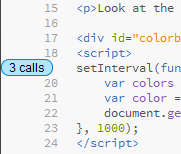

The payoff for opening the web page with the lightning bolt is that Theseus will work on the JavaScript on a page as well.
Look at the source for this page in Brackets!
You should see the call counts again:

I just wanted to point that out. It'll only work with static HTML files and JS files, though, not server-generated ones.
Theseus can be finicky in Proxy mode. If you don't see call counts, check the lightning bolt. If it's not bright orange like this , Theseus may have lost connection with Chrome. Just close the broken tab and click the lightning bolt again.
Open public/tutorial-08.html in Brackets. It should automatically open in this Chrome tab as well. If not, click the lightning bolt again.